DATABASE MANAGEMENT & DATA ENGINEERING · PROJECT 02
Automated ETL Pipeline with Docker & PostgreSQL
A Python ETL workflow that cleans and validates real-world retail transactions, loads them into a containerized PostgreSQL database, and supports scheduled execution through macOS launchd.
Project Overview
I built a Python-based Extract, Transform, Load (ETL) pipeline to process the UCI Online Retail dataset. The workflow cleans transaction data, checks data quality, connects securely to PostgreSQL 17 running in Docker, and loads 536,641 validated records. I also configured a macOS scheduler and confirmed a successful manually triggered execution.
Pipeline Architecture
UCI Online Retail CSV
↓
Python + Pandas: Extract & Transform
↓
Data Quality Validation
↓
SQLAlchemy / Psycopg
↓
PostgreSQL 17 in Docker
↓
SQL Verification in pgAdmin
macOS launchd → run_etl.sh → Python ETL → execution logETL & Automation Workflow
Expand each phase to see the implementation, validation queries, and supporting screenshots.
01 · Docker & Database SetupContainerized PostgreSQL 17 and connected through pgAdmin.⌄
PostgreSQL runs inside a Docker container named etl-postgres, with the etl_project database accessible locally on port 5433.
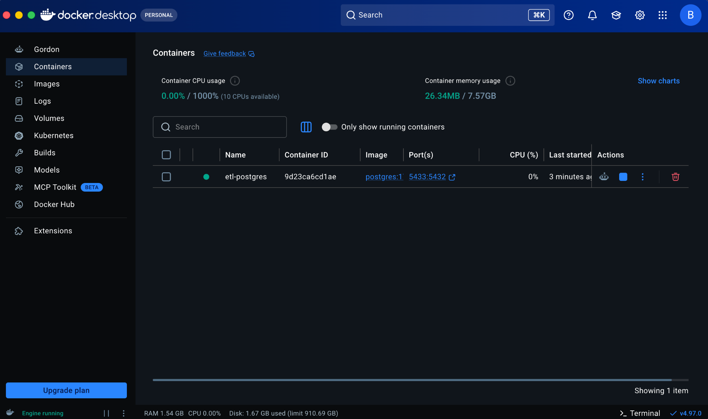
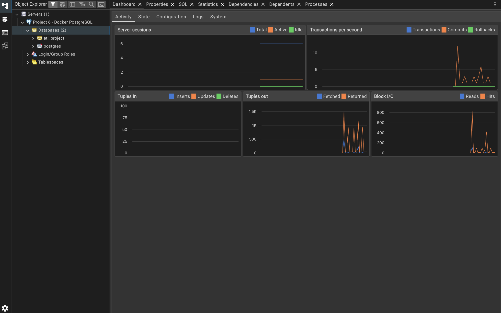
02 · Extract Retail DataImported the UCI Online Retail transaction dataset.⌄
The CSV includes invoice numbers, timestamps, descriptions, quantities, prices, and customer identifiers. The source data is preserved while transformations are performed in Python.
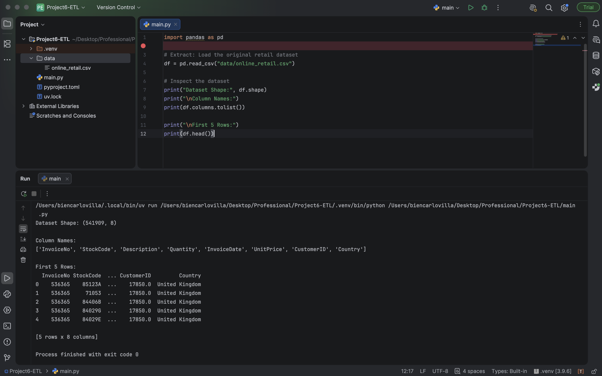
03 · Clean & TransformConverted dates, handled missing fields, classified transactions, and calculated totals.⌄
Converted invoice dates into datetime values, retained missing customer IDs rather than inventing data, addressed missing descriptions, and identified non-positive prices. Transactions were classified as sales or returns.
# Representative transformation logic
clean_df["InvoiceDate"] = pd.to_datetime(
clean_df["InvoiceDate"],
format="%m/%d/%y %H:%M",
errors="coerce"
)
# Check data quality after transformation
print("Invalid dates:", clean_df["InvoiceDate"].isna().sum())Illustrative excerpt based on the project workflow. The complete working implementation is available in the GitHub repository.
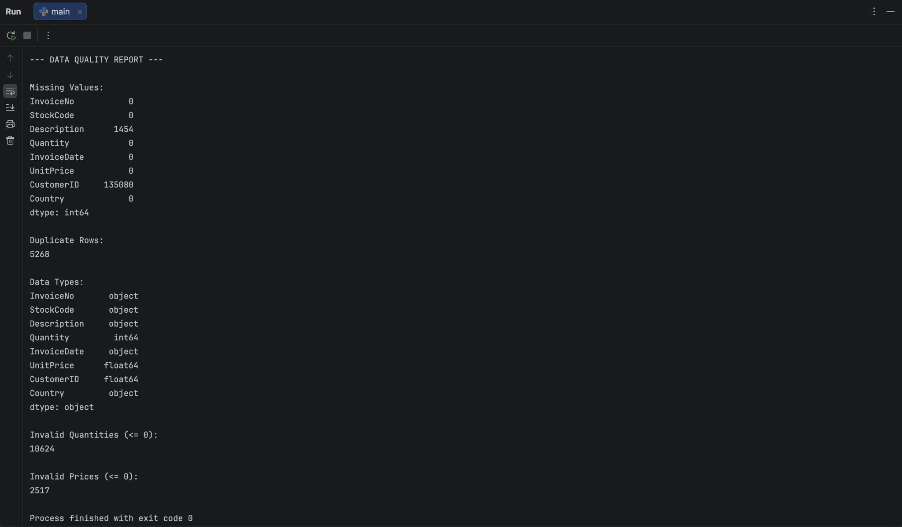
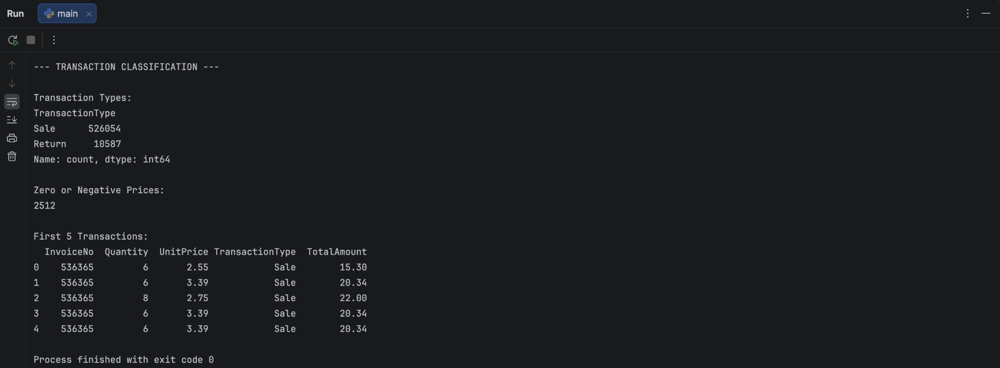
04 · Validate Transformed DataChecked missing values, duplicate records, date parsing, and transaction amounts.⌄
The final dataset contains 536,641 records, with zero invalid dates, zero duplicate records, and zero missing descriptions. The 135,037 missing customer IDs were retained and documented.
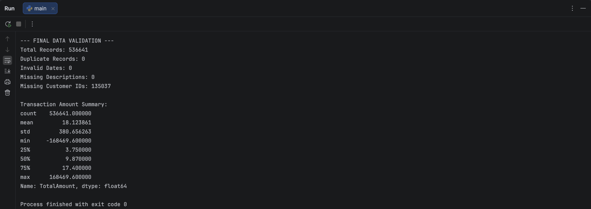
05 · Load into PostgreSQLConnected with SQLAlchemy/Psycopg and loaded the cleaned records.⌄
The Python pipeline connects to the Docker-hosted etl_project database using environment-based credentials and loads the final records into retail_transactions.
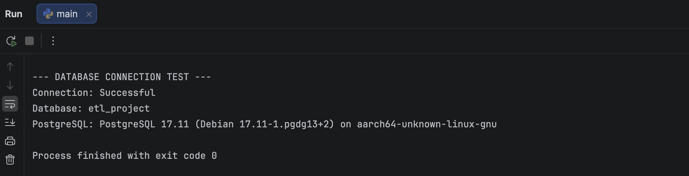
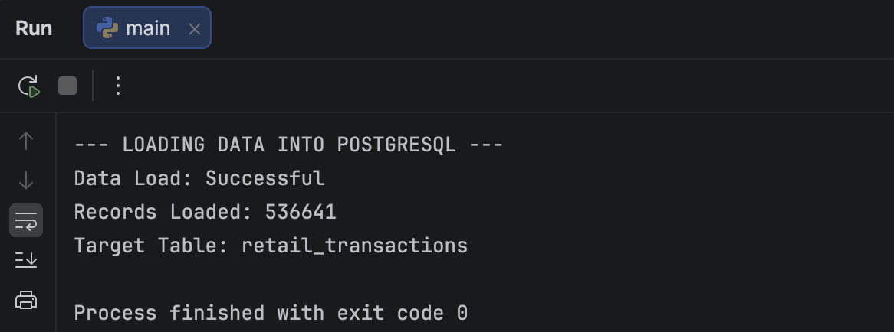
06 · Validate with SQLVerified row counts, null values, and transaction categories in pgAdmin.⌄
SELECT COUNT(*) AS total_records
FROM retail_transactions;SELECT
COUNT(*) AS total_records,
COUNT(*) FILTER (WHERE "InvoiceDate" IS NULL) AS invalid_dates,
COUNT(*) FILTER (WHERE "Description" IS NULL) AS missing_descriptions,
COUNT(*) FILTER (WHERE "CustomerID" IS NULL) AS missing_customer_ids,
COUNT(*) FILTER (WHERE "TransactionType" = 'Sale') AS sales,
COUNT(*) FILTER (WHERE "TransactionType" = 'Return') AS returns
FROM retail_transactions;SQL results: 536,641 total records, 0 invalid dates, 0 missing descriptions, 135,037 missing customer IDs, 526,054 sales, and 10,587 returns.
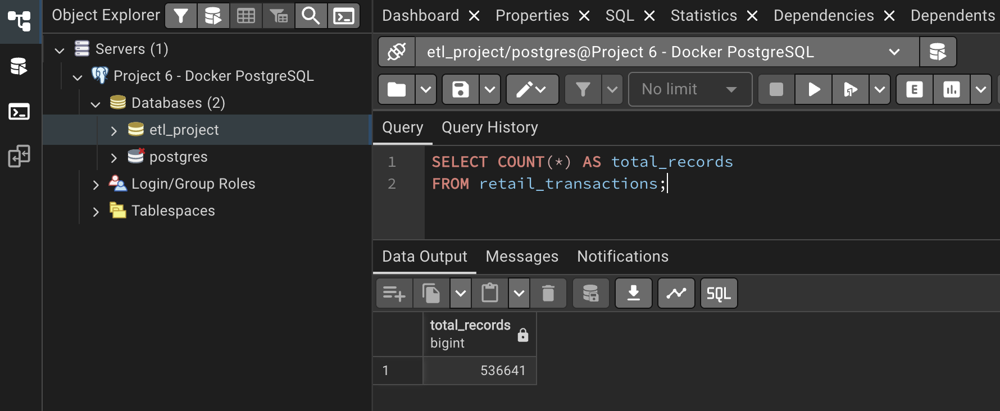
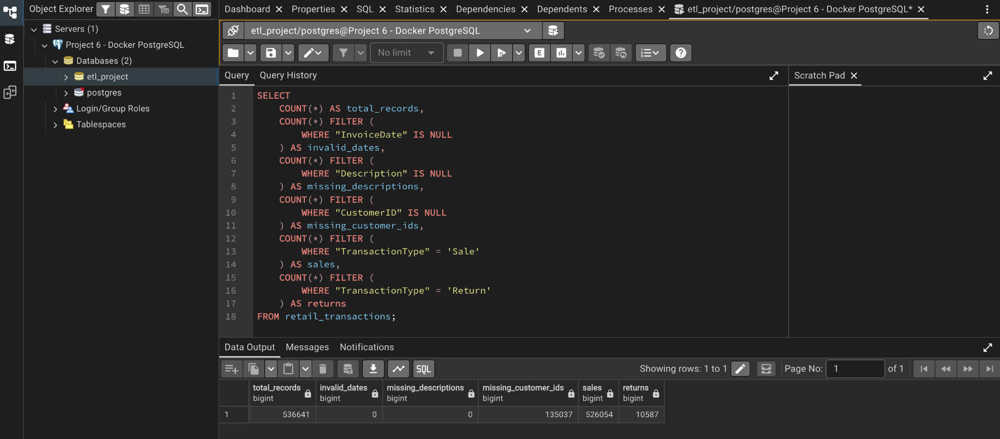
07 · Execution & AutomationRan the pipeline from a shell script and tested the macOS scheduler.⌄
run_etl.sh executes the Python pipeline and writes to logs/etl.log. A macOS launchd agent is configured for 9:00 AM daily. A manually triggered scheduler run returned exit code 0. The first unattended scheduled run has not yet been independently verified.
# Inspect the launchd agent after a test run
launchctl print gui/$(id -u)/com.portfolio.etl | grep -E "state =|last exit code|runs ="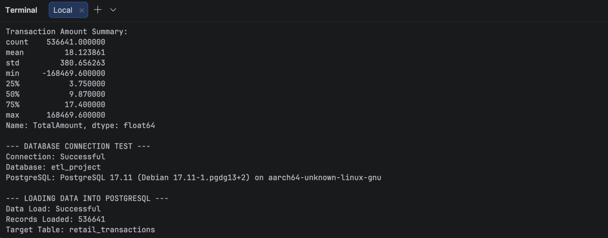
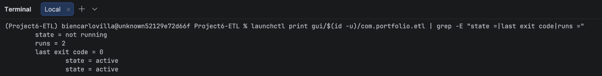
Data Quality Results
After cleaning, the dataset contains 526,054 sales and 10,587 returns. There are 135,037 missing customer IDs, intentionally preserved as unknown values rather than filled with invented identifiers. The workflow also flagged 2,512 zero or negative prices for review.
Dataset & Source Code
Dataset: UCI Machine Learning Repository: Online Retail. The repository contains the pipeline source, shell runner, scheduler configuration, requirements, and complete technical README.
View GitHub Repository ↗Back to Projects